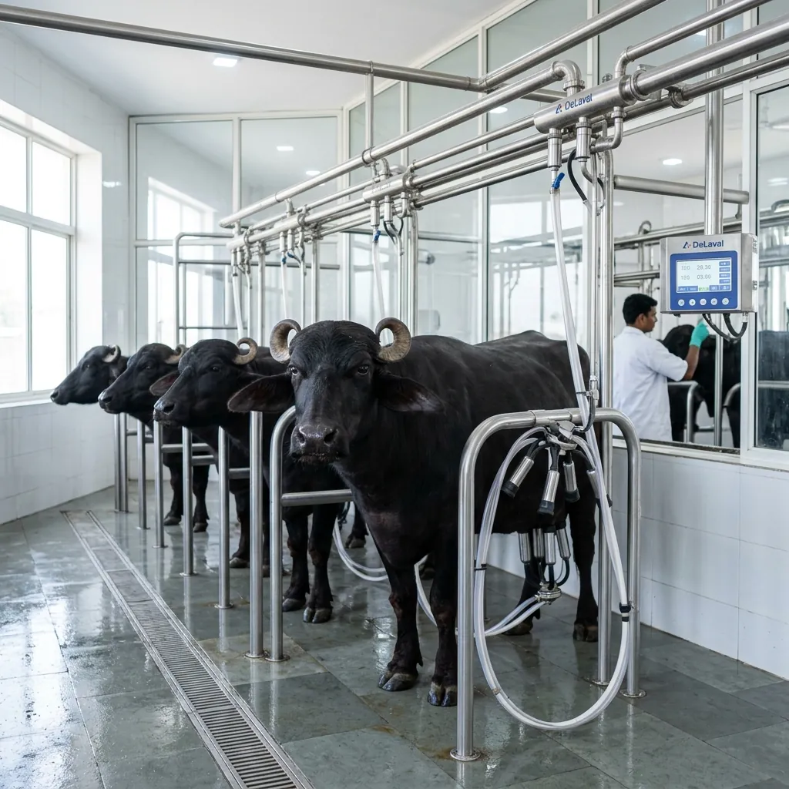

OUR ROOTS
Made close.
Made accountable.
Samara begins in western Uttar Pradesh—with local dairy knowledge, a modern standard of care and a belief that trust must be earned every morning.
ALIGARH — BULANDSHAHR
WHY SAMARA
A better relationship
with everyday food.
We are building the dairy brand we wanted for our own families: local enough to know, careful enough to trust, and transparent enough to question.
The region around Aligarh and Bulandshahr carries generations of dairy experience. Samara does not replace that wisdom—it gives it stronger systems, better handling and a clearer voice.

WHAT WE ARE BUILDING
Tradition, with
better evidence.
Respectful careAnimal wellbeing before output.
Clear sourcingA shorter, understandable supply chain.
Batch checksQuality information people can access.
Local freshnessDelivery designed around proximity.
FARM MANAGER
Dr. Mohammad
Abdullah Raza
“Samara is not about making the loudest purity claim. It is about building a process strong enough to make quieter claims—and prove them.”
PURE BY NATURE
HONEST BY CHOICE
COME ALONG FROM DAY ONE
The first chapter
starts locally.
Join our opening delivery circle.
JOIN THE FIRST LIST →